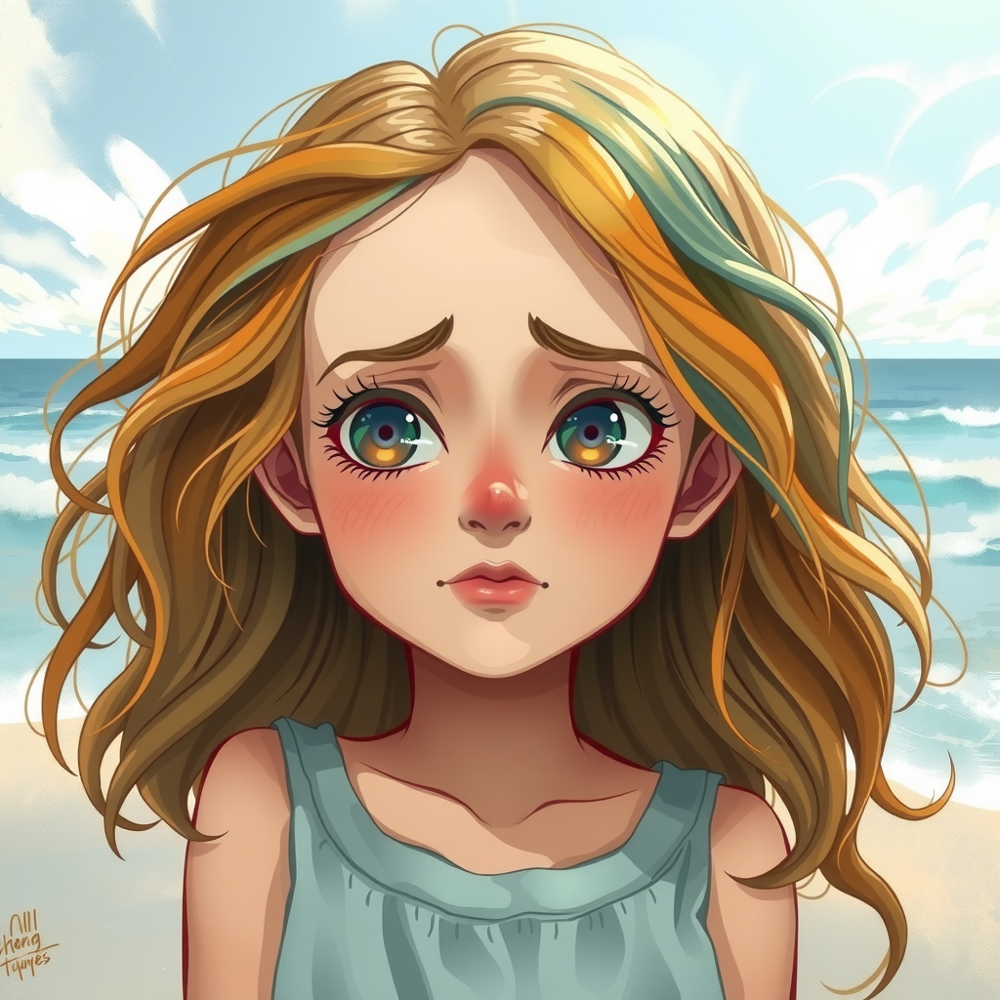

Capítulo 1: Un Arcoíris Diferente

En lo alto del cielo, donde las nubes danzan con el viento, vivía un hermoso arcoíris llamado Rubí...
Leer másRubí era el arcoíris más brillante que jamás se había visto. Sus colores resplandecían con una intensidad única: rojo como el amor, naranja como el atardecer, amarillo como el sol, verde como los bosques, azul como el mar, índigo como la noche y violeta como las flores más exóticas. Cada vez que aparecía, los niños gritaban de alegría y los adultos se detenían a admirar su belleza. Sin embargo, Rubí no se sentía satisfecha. Mientras observaba a los humanos desde lo alto, comenzó a preguntarse cómo sería vivir como ellos, caminar sobre la tierra, sentir el agua del mar, experimentar todas esas emociones que veía en sus rostros.
Capítulo 2: La Conversación con el Sol
Una tarde, mientras Rubí brillaba sobre el mar Caribe, el Sol notó su melancolía...
Leer más"¿Por qué suspiras tanto, pequeña Rubí?", preguntó el Sol con su voz cálida y profunda. "Oh, Sol sabio", respondió Rubí, "cada día veo a los humanos vivir sus vidas, reír, llorar, abrazar... ¡Cómo desearía poder experimentar lo que ellos sienten! Si tan solo pudiera ser humana, mi existencia sería eterna y significativa". El Sol, que había presenciado el nacimiento y ocaso de innumerables civilizaciones, sonrió con sabiduría. "Puedo concederte ese deseo, Rubí. Puedo convertirte en humana por un día completo. Pero recuerda, todo deseo tiene sus consecuencias". Sin pensarlo dos veces, cegada por su anhelo, Rubí exclamó: "¡Sí, por favor! ¡Es lo que más deseo en el mundo!"
Capítulo 3: Un Despertar Diferente
De repente, todo se volvió oscuro para Rubí, y cuando abrió los ojos, ya no estaba en el cielo...
Leer másRubí se encontró en la isla de Margarita, sintiendo por primera vez la arena caliente bajo sus pies. Estaba desnuda, confundida y asustada. Su cuerpo humano era hermoso, pero vulnerable. El hambre, la sed y el calor eran sensaciones completamente nuevas y abrumadoras. Intentó comunicarse con las personas que pasaban, pero de su boca solo salían sonidos incomprensibles. Nunca había necesitado hablar antes, y ahora no sabía cómo hacerlo. La gente la miraba con extrañeza y desaprobación. Algunos se reían, otros se alejaban asustados, y algunos llamaron a las autoridades.
Capítulo 4: La Dura Realidad
Las siguientes horas fueron una pesadilla para Rubí...
Leer másLa policía la llevó detenida, pensando que estaba perturbada. En la celda, Rubí experimentó por primera vez lo que significaba estar encerrada, ella que siempre había sido tan libre en el cielo. No podía explicar quién era ni de dónde venía. Cuando finalmente la liberaron, vagó por las calles bajo el sol abrasador. Su estómago dolía de hambre, su garganta ardía de sed, y su piel, antes hecha de luz y color, ahora estaba roja por las quemaduras del sol.
Capítulo 5: El Atardecer de la Verdad
Al caer la tarde, Rubí llegó a una playa solitaria...
Leer másExhausta y adolorida, se sentó en la arena mirando hacia el horizonte. El cielo comenzaba a teñirse de los mismos colores que ella solía lucir. Las lágrimas rodaron por sus mejillas mientras comprendía la verdadera lección. "Cada ser tiene su propio propósito y belleza", pensó. "Yo deseaba ser humana sin entender que mi don era traer alegría y esperanza a otros desde el cielo. Quería escapar de quien era en vez de aceptar y valorar mi propia naturaleza". Justo cuando el sol comenzaba a ocultarse, su voz resonó nuevamente: "Rubí, ¿has aprendido algo hoy?" "Sí", respondió ella entre lágrimas, "pero ahora tengo una decisión más importante que tomar..." El Sol sonrió misteriosamente y preguntó: "¿Te gustaría ser humana... para siempre?" Continuará...